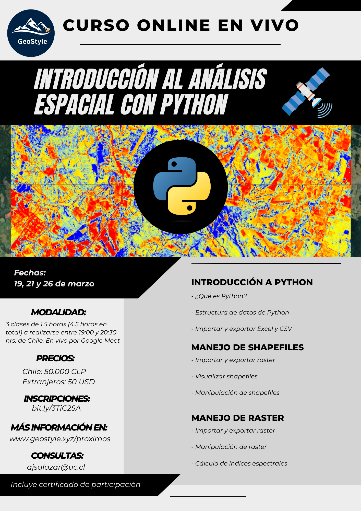

Próximo evento
Curso online en vivo:
Introducción al Análisis Espacial con Python
En esta página encontrarás la información detallada del curso, así como la respuesta a las preguntas más frecuentes.

1) ¿En qué fecha es el curso en vivo?
Los días 19, 21 y 26 de marzo (de 19:00 a 20:30 hrs. Chile)
2) ¿Las clases se grabarán?
Sí, serán grabadas y compartidas a los asistentes en un carpeta de
Google Drive.
Si quieres participar pero tienes problemas con la fecha
u horario, puedes inscribirte igual
y ver los videos de las clases
grabadas junto con el material.
3) ¿El curso entrega certificado?
Sí, el curso entrega certificado. No es necesario hacer un trabajo de aprobación para recibir el certificado.
4) ¿Qué aprenderé?
| Clase | Fecha | Tema | Contenidos |
|---|---|---|---|
| 1 | 19/03 | Introducción a Python |
|
| 2 | 21/03 | Manejo de archivos vectoriales |
|
| 3 | 25/03 | Manejos de archivos raster |
|
5) ¿Qué es Python y qué ventajas me entrega?
Python es un lenguaje de programación de código abierto que es
extremadamente
versátil y poderoso. Con Python, puedes realizar análisis de
datos, visualización de datos, y modelado
estadístico avanzado que no
podrías hacer con un software SIG tradicional. A diferencia de los programas SIG
tradicionales como QGIS y
ArcGIS, Python te permite tener un control completo sobre tus análisis y
tus datos.
Puedes automatizar procesos, repetir análisis fácilmente, y
adaptar los análisis a tus necesidades específicas.
Además, la
comunidad de usuarios de Python es muy activa y hay una gran cantidad de
librerías disponibles
para casi cualquier tipo de análisis que puedas
imaginar. Todo esto hace de Python una herramienta
increíblemente poderosa
para cualquier profesional que trabaja con archivos espaciales.
6) ¿Qué obtengo al inscribirme?
Además, del curso en vivo obtienes dos cursos asincrónicos (videos
grabados) de regalo:
1) Acceso gratis al curso "Google Earth Engine y Machine Learning",
el
cuál es un curso asincrónico (son videos grabados en la plataforma
Udemy).
En este curso vas a poder practicar lo aprendido (más
información click
acá)
2) Acceso gratis al curso "Introducción a SIG y Teledetección en Python",
el cuál es un curso asincrónico (son videos grabados en la
plataforma Udemy).
En este curso vas a poder practicar lo aprendido
(más información click
acá)
7) ¿Puedes contar un poco más sobre los cursos asincrónicos de regalo?
Estos cursos tienen una metodología flexible, ya que estos son videos
grabados
que se encuentran en la plataforma Udemy y podrás avanzar
cuando más te acomode.
Además, en estos cursos podrás reforzar y
practicar lo aprendido en el curso realizado en vivo.
Puntos importantes:
- Una vez que te inscribes al curso, tienes acceso de por vida al
contenido,
por lo que puedes avanzar en el curso a tu propio ritmo.
- Los cursos tienen tareas para practicar lo aprendido.
Las tareas no
son obligatorias, pero se recomienda que las realices, ya que
para
dominar lo aprendido en los cursos tienes que practicar y practicar.
Recuerda que la práctica hace al maestro.
- Una vez finalizado el curso, recibes un certificado de aprobación
del curso.
8) No soy de Chile, ¿puedo participar igual?
Sí, este curso está abierto a personas de todos los países del mundo.
9) ¿Cómo sé si el curso es bueno?
Acá puedes ver las opiniones de personas que se han inscrito a los demás cursos
10) ¿Qué conocimientos previos necesito?
Sólo necesitas tener conocimientos básicos sobre SIG y Teledetección.
No es necesario tener conocimientos previos sobre programación.
11) ¿Necesito descargar un software para el curso?
Sí, solo necesitas descargar Anaconda. Con Anaconda usaremos Jupyter Notebook para ejecutar código de Python
12) ¿A través de qué plataforma se dictará el curso?
Google Meet
13) ¿Quién dictará el curso?
Andrés Salazar, Ingeniero Agrónomo y Magíster en Recursos Naturales (Pontificia Universidad Católica de Chile).
Además, cuenta con un diplomado en Gestión Integrada de Recursos Hídricos (Universidad de Chile)
Andrés cuenta con una experiencia de 3 años realizando
capacitaciones de
R, Python y Google Earth Engine. Combinando los formatos
online sincrónicos y asincrónicos,
ha enseñado a más de 1000 personas
a utilizar R, Python y Google Earth Engine.
Pefil Linkedin
Perfil ResearchGate
14) ¿Cuál es el valor del curso?
Personas de Chile: 50.000 CLP
Extranjeros: 50 USD
15) ¿Cómo se realiza el pago?
Personas de Chile: mediante transferencia bancaria
Extranjeros: mediante PayPal
*Los datos para realizar el pago están en el formulario de inscripción
(al final de esta página)
16) Soy extranjero y nunca he usado PayPal
No te preocupes, es un sistema súper seguro.
Hemos recibido
transferencias de dinero de muchos países y nunca hemos tenido
problemas con PayPal.
Sólo necesitas una tarjeta de crédito para
vincularla con tu cuenta de PayPal.
Si quieres más información de como funciona PayPal, haz click
acá
17) ¿Dónde me inscribo?
Entrando al siguiente link